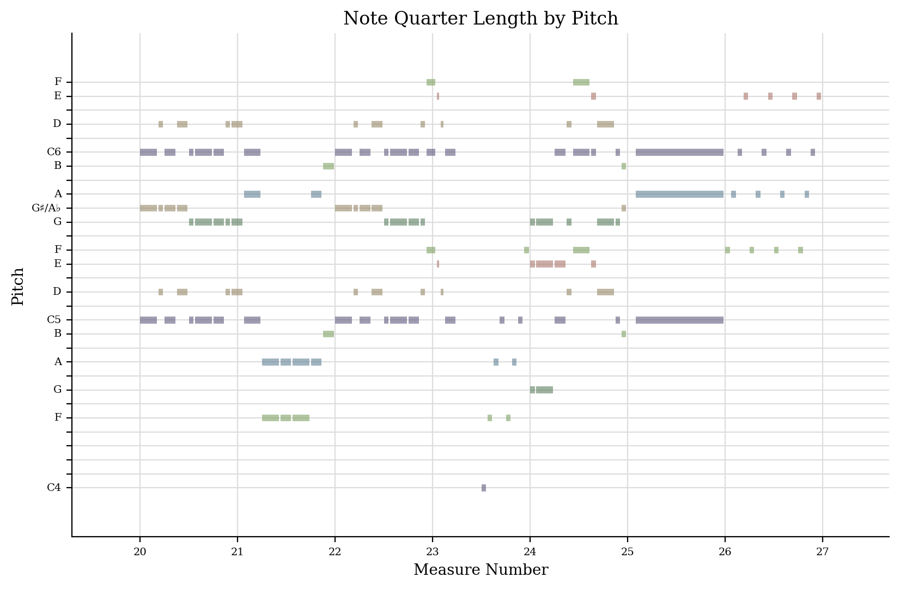
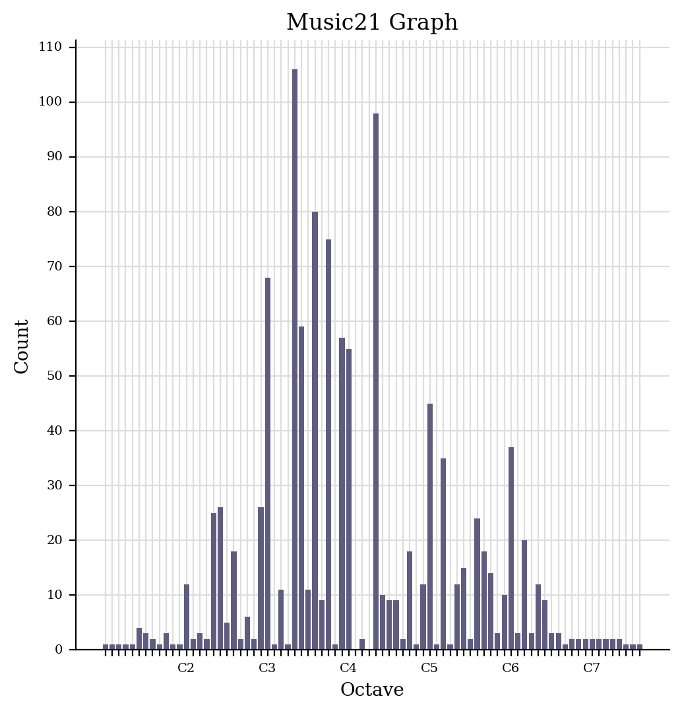

This week's task involved making a jSymbolic analysis of our chosen piece of music and selecting what features were the most interesting and revelavnt for my piece.
Piano Roll
The piano roll highlights certain aspects of the song for example, the clear and repeating melody of the song can be viewed in the piano roll if viewing the similar pitch patterns that recur across the C, D and G pitches.
Histogram
The histogram showcases how repetitive the song is as well as how the song is played by mainly focusing on the keys in the centre of the keyboard.